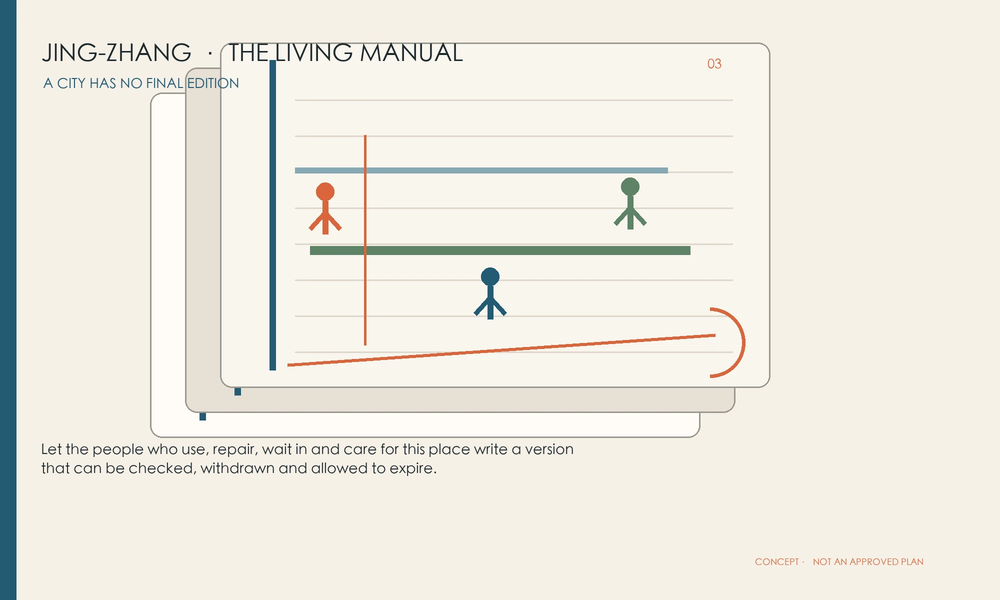
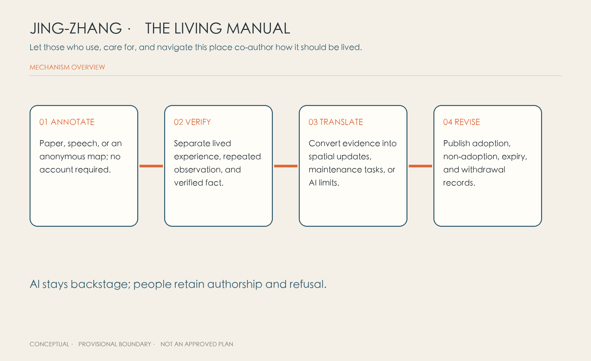
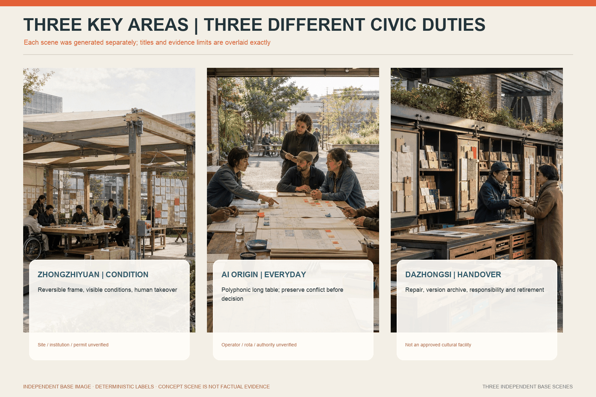
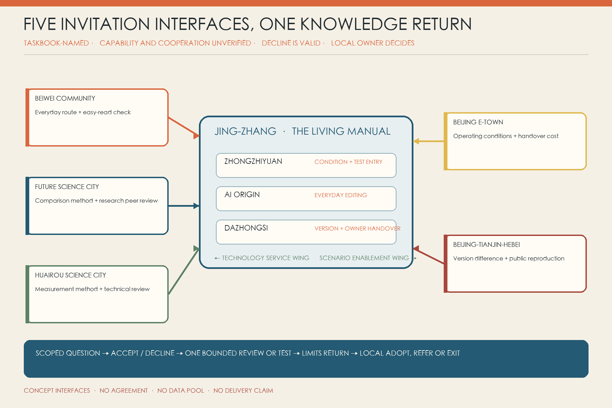
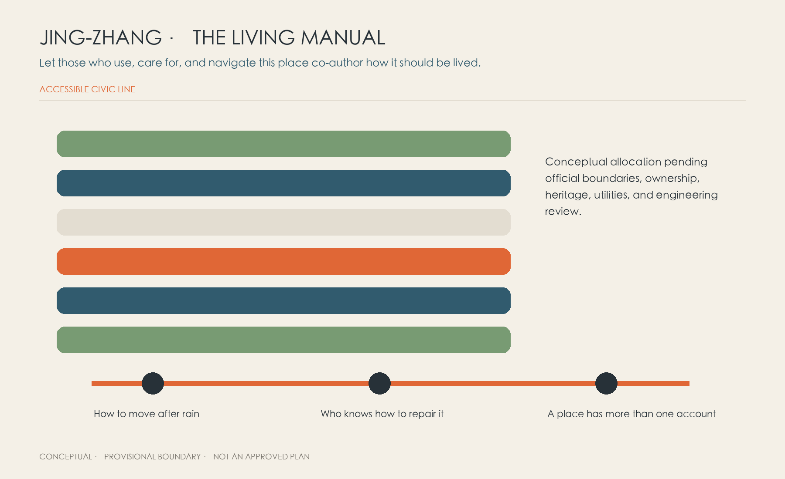
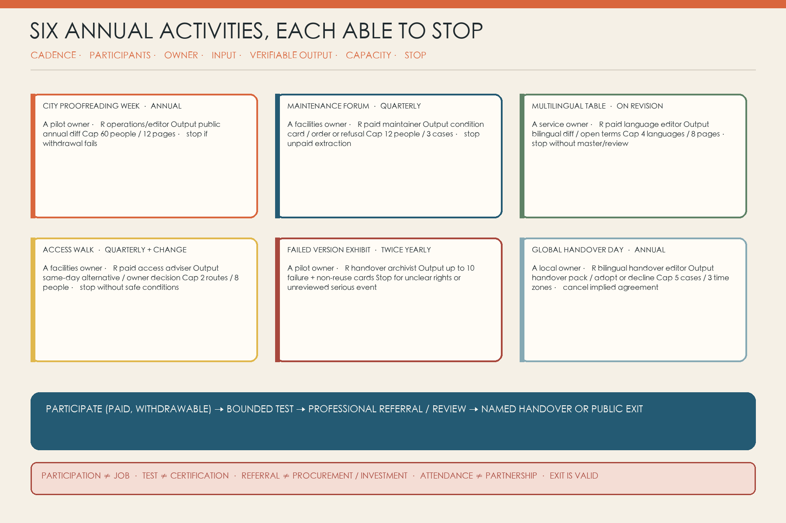

Let people who use, repair, wait in and care for this place write a version that can be checked, withdrawn and allowed to expire.
CONCEPT PROPOSAL · PROVISIONAL GEOMETRY · NOT GOVERNMENT APPROVAL

01 · OVERVIEW / THREE SCOPES / LAND USE
One Binding Line holds space and responsibility together
The map shows design relationships only: six diagonal leaves, six cross-links, a green spine, nine small civic pockets and three non-regulatory reference envelopes.

02 · KEY AREAS
Three volumes, not three copies of one district
01
ZHONGZHIYUAN · CONDITION BOOK
Blank First Page: declare unknowns and fallback before testing.
02
AI ORIGIN · EVERYDAY BOOK
Polyphonic Table: preserve conflict across time and weather.
03
DAZHONGSI · HANDOVER BOOK
Handover Spine: pass repair, version, ownership and retirement onward.

03 · REGIONAL COOPERATION LOOP
Five invitation interfaces, not five partnership claims
Beiwei Community, Future Science City, Huairou Science City, Beijing E-Town and Beijing-Tianjin-Hebei are named by the taskbook only. Cooperation, capability, data, sites and owners remain unverified. Each interface may decline; any scoped result returns to a local owner to adopt, refer or exit.

CONCEPT INTERFACES · NO AGREEMENT · NO CROSS-REGION DATA POOL · NO PARTNERSHIP OR DELIVERY CLAIM
04 · AI SCENARIOS
Twelve pages begin with ordinary questions
These are existing concept scenarios from the full proposal, not live services. Before real use, each page needs a version, place and time scope, risk, current state, human owner and expiry. Observation, field verification and human decision remain separate records.
Click or use Enter / Space to choose. Arrow keys move between pages; Home / End select the first / last page. Tab continues to the full-report links below.
01 · Rain route
Field action
A verifier walks the route within two hours after rain, marking water, steps, barriers and today's alternative.
AI's narrow task
Merge repeated observations at the same location into a map draft watermarked as pending verification.
Human owner, expiry and stop
The site/drainage owner issues a temporary route. Weather or works changes expire it; no same-day field check means no public navigation.
02 · Lift / access outage
Field action
Check lift status, slope, kerb, door width and detour distance, not just the base map.
AI's narrow task
Translate repair and status notices, and compare yesterday's and today's route versions.
Human owner, expiry and stop
An accessibility specialist confirms an equivalent route; the facilities owner handles repair. Unknown lift status or an inaccessible alternative stops AI advice.
03 · Courier gate
Field action
Record time, gate rules and actual detours without collecting orders or performance data.
AI's narrow task
De-duplicate anonymous gate notes and group them by time and rule version.
Human owner, expiry and stop
The site owner aligns gate staff rules and physical signs. No data returns to platform performance assessment; no gate-staff sign-off means no publication.
04 · Night lighting
Field action
Residents, pedestrians and maintainers observe darkness, glare, obstruction and residential impact at different times.
AI's narrow task
Organise time, weather and direction into a list of points awaiting measurement.
Human owner, expiry and stop
Lighting/safety staff measure and decide adjustments. Residential disturbance or safety conflicts call for reversible fixtures first and a pause in automatic adjustment.
05 · Shade and wait
Field action
On hot days, observe seats, shade, queues, care and wheelchair pauses without tracking individuals.
AI's narrow task
Draft time-specific heat-area summaries and flag insufficient observations.
Human owner, expiry and stop
The public-realm owner and users choose sites together. No maintenance and watering responsibility means no new high-maintenance facilities.
06 · Care route
Field action
People with pushchairs and older people walk a complete service journey, noting seats, toilets, thresholds and level changes.
AI's narrow task
Draft bilingual/easy-read steps and mark uncertain parts.
Human owner, expiry and stop
Staffed service gives the route in person and checks its wording. Health, family or child information enters a restricted queue; original words are not made public.
07 · Offline service
Field action
Complete a task with no smartphone, account or stable network as the default condition.
AI's narrow task
Order required materials, identify jargon and prepare an easy-read draft.
Human owner, expiry and stop
The human service desk completes the service and explains missing materials. AI never determines eligibility. A broken paper or phone route means the digital scenario cannot be called usable.
08 · Maintenance material
Field action
Maintainers compare three materials for replacement, spares, cleaning, safety and workable shutdown windows.
AI's narrow task
Compare past versions, fault types and maintenance instructions in a difference table.
Human owner, expiry and stop
The maintenance owner signs the conditions and may refuse unsafe work. Experience is not collected without paid time and a permission choice.
09 · Low-speed robot yielding
Field action
In a closed or semi-open test strip, log near misses, blind areas, children's and wheelchair users' responses, and human takeover.
AI's narrow task
Classify events provisionally and flag repeated situations; do not predict individual behaviour.
Human owner, expiry and stop
The on-site safety officer controls emergency stop, restart and clearing the area. Collision, unexplained misclassification or failed takeover stops operation immediately.
10 · Plural Jing-Zhang history
Field action
Place archives, resident memories, maintenance records and guide texts side by side, retaining differences between sources.
AI's narrow task
Link sources, flag textual conflicts and draft multilingual text.
Human owner, expiry and stop
Archive/community editors decide the display structure, not a single truth. Unknown sources, private trauma or unclear rights mean no public display.
11 · Small-shop service threshold
Field action
Small shops test a real but redacted service journey for materials, entrances, delivery and event impacts.
AI's narrow task
Rewrite eligibility text in plain language and route it to the correct human department.
Human owner, expiry and stop
The responsible department explains eligibility and non-adoption. AI neither approves nor scores; a stale source or unavailable human review takes the page offline.
12 · Edge-computing energy
Field action
Record powered-on periods, power use, heat, noise, faults and functions actually used.
AI's narrow task
Compare energy and task volume across versions, suggesting candidates for shutdown or replacement.
Human owner, expiry and stop
The facilities owner decides to retain, throttle, close or replace. No metering, maintenance, fire-safety or safe-isolation conditions means no installation.
Six people are synthetic probes, not a representative sample. Six ports are staffed points in borrowed space, not six buildings.
06 · PROJECTS / MOBILITY / BLUE-GREEN SPACE
Start with two sites, 24 weeks, and the ability to stop

Gate 0: owner, paid roles, sites, reviews and referrals
8 weeks: prepare two sites and three low-risk cases
12 weeks: real pilot with no-AI baselines
4 weeks: public closeout, withdrawal, expiry and handover
No owner · unpaid roles · sensitive raw data by default · forced identity/tracking · disagreement erased · no field check · no human route · safety event · overload · no action owner
07 · AGENT.6 ANNUAL OPERATIONS
Six activities, each with capacity and a stop rule
City Proofreading Week, the Maintenance Workers' Forum, Multilingual Proofreading Table, Accessible Walk-through, Failed Version Exhibition and Global Handover Day run only with named responsibility, budget, paid participation, verifiable output and an exit route.

PARTICIPATION ≠ JOB · TEST ≠ CERTIFICATION · REFERRAL ≠ PROCUREMENT OR INVESTMENT · ATTENDANCE ≠ PARTNERSHIP · EXIT IS VALID
Six Agent tasks, fifteen depth items, standards, 23 call requirements, geometry and metrics are mapped through three matrices and JSON/GeoJSON. Official boundaries, controls, heritage, utilities, budget and real outcomes remain provisional or unknown.